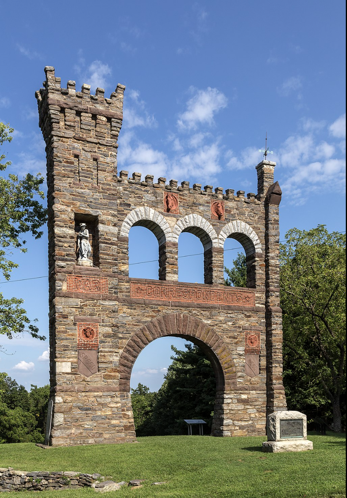

Primary Source:
The American Hercules

The American Hercules is a political cartoon by Currier & Ives made in 1861 as a depiction of 19th century America’s arguably most important general, General Winfield Scott.
Winfield Scott remains the longest-serving officer in US history, and was a war hero during the War of 1812 who rose up to the rank of general over the course of several decades. He was favored by various presidents for his efforts to reform and progress the military, most notably by Andrew Jackson, and was finally appointed the position of commanding general by Martin Van Buren in 1841.
However, by the time the Civil War commenced Scott had become old, and infirm, and recognized himself as incapable of acting as an effective field general during the war. Instead, he attempted to name Robert E. Lee as the commanding officer of the army to put down the rebellion, only for Lee to decline the offer as Virginia would secede 2 days later, with Lee ironically later assuming command of the Confederate army. After a series of setbacks, Major General George B. McClellan assumed command, and Scott retired after various disagreements with McClellan.
Though he was a crucial advisor to Lincoln during the course of the war, he never assumed command of Union forces, or played a direct role as commander during any major battle.
The American Hercules is not a depiction of Scott during the civil war, instead relying on his likeness several decades prior, standing taller, thinner, and much younger than he was in 1861. The actual action depicted is of Scott as a timeless hero, boldly slaying the dreaded hydra of rebel forces. This piece shows a critical aspect of the messages expressed in both Confederate and Union propaganda during the war - rather than outright lying, a comfortable version of the truth is presented, specifically for the cause of the war. Pieces such as these were handcrafted for newspapers and pamphlets to reassure a terrified and wary American public that their war heroes could be trusted to save the Union, regardless of the actual circumstances those supposed heroes were truly in.
Secondary Primary Source:
Confederate Envelope

Examples of Confederate Civil War propaganda are significantly less numerous in historical records compared to their Union counterparts, as the Confederacy’s comparably smaller unified newspapers and propaganda distribution methods resulted in less preservation.
One of the best representations of their propaganda can be seen in the envelopes used to relay messages, as these often served as the base for the propaganda pamphlets used by both sides to flood the country with their narrative of the war.
This unnamed envelope shows a declaration by Confederate President Jefferson Davis, a declaration that rhetorically resonates with the “War of Northern Aggression” myth so common in Civil War misinformation today. The envelope serves as powerful propaganda not in what it says, but in what it omits, refusing to acknowledge the attempted preservation of slavery that was so central to the seceding states, instead only declaring a steadfast resolution to protect the confederacy and its people, in pursuit, ironically, of freedom.
Notably, most other works of civil war propaganda seen in these envelopes show a similar pattern of erasing slavery, with pro-Union works focusing on the rhetoric of preserving the United States and bringing traitors to justice, and pro-Confederate works focusing on the rhetoric of protecting their homeland from Union aggressors. Of over 10,000 recorded designs, only about 80 were known to depict African Americans at all. Patterns such as these can give powerful clues for why narratives such as that of “States Rights” remain so powerful even today.
Research Essay:
Propaganda and Journalism in the Civil War

The story of the Civil War is as much about the battles that were fought as it is about how those battles were retold after the last shot fired, and for the majority of Americans living in the era, they were retold through newspapers and propaganda pamphlets. These mediums of communication, as a result, form the core of the competing narratives that remain in how the Civil War is taught and understood today, and examining the conditions in which they were written shows how these narratives began. This essay is about these conditions. It intends to elaborate on the social, political, economic, and cultural circumstances surrounding the journalism and propaganda of Civil War era America, and how these circumstances influenced the media that later defined how we understand said era.
Social
The most efficient way to describe the social climate of American journalism as the Civil War began was akin to that of a “Wild West”. Specifically, journalism was caught in a turning point between two styles of newspaper, two styles that competed within a new journalistic paradigm.
The first was that of long-standing, subscription-based journals, such as The Chicago Tribune, The Wall Street Journal, or The New York Times. These papers catered to the upper-middle class and upper-class, and their subscription-based model led to a kind of product loyalty, as well as specific political views each paper tended to espouse. Most of these papers were distributed to only one city and its surrounding area, but papers and individual articles would often travel far beyond this range.
The second were the so-called “penny papers”. These newspapers grew as a result of advances in industrial printing-press technology that significantly cheapened the cost of producing an actual paper, to such a degree that a single newspaper could be sold at a profit for a single penny. These papers exploded into prominence in response to this profitability, and catered their news to that of middle and lower class Americans for the first time in the nation's history. Many of them had similarities to the old guard of news printing, being restricted to local areas of distribution and cultivating an audience based on certain political biases, but lack of a subscription based model led to significantly more sensational and pathos-oriented news content.
Propaganda found its way into both of these ways in myriad ways, as satirical cartoons, as reprints of pamphlets distributed to Confederate and Union soldiers alike, and as stories recounting the letters and retellings of said soldiers, retellings that were often embellished and misremembered. The result was journalism that often relied on propaganda as its primary source of news, and blurred the line between factual reporting and political messaging.
It is worth noting the demographics of the journalists themselves were overwhelmingly white and male due to various factors. Despite the lower cost, the capital needed to establish a press still made it out of reach for minority groups that faced significant economic disenfranchisement. The danger of the job for frontline reporters was extreme, often comparable to that of the actual soldiery, and this danger was far more pronounced for black Americans - especially those previously enslaved - and women. The actual articles were also often published under pen names, as especially in Confederate areas those marginalized would need protection in anonymity, meaning their true identity would go unrecorded. Regardless, at least 3 women and 1 black man were confirmed to be reporters, but this is a very small portion of the approximately 500 journalists that made up the entire industry.
Political
The politics of newspapers was the politics of the truth, and as a result, occupied the same space as politics surrounding the actual government. Long before the first actual fighting of the civil war, newspapers on either side of the political line had been in a war of words, in one of the most polarizing political climates in the nation’s history. The newspapers themselves reflected this political climate as much as they fed into it, as individual papers became central political voices. Both styles of newspaper interacted with politics in differing ways, however.
Editors of long-form, subscription-style papers were often political figures in and of themselves, with editors such as Horace Greeley being so prominent as to be a specific target for hatred by Confederates throughout the war, alongside journalists that reported for Greeley’s Chicago Tribune. Greeley’s support for Abraham Lincoln was a critical part of his rise from the Illinois State Legislator to the presidency, and his temporary withdrawal of support was considered a serious threat to Lincoln’s bid. Other editors were often politicians themselves, and would use their newspaper as a method of support for their political campaigns.
The penny-papers often lacked the long-term established political capital of the old style, and instead had effect due to sheer volume. Almost every American had access to at least one of these publications, and the political understandings of the time were dominated by how these papers chose to present their stories.
The only form of publication that could be considered as purely “factual” were the reports of the Union and Confederate armies distributed along their telegram networks, reported by the Associated Press and Confederate Press network, respectively. Both of these lines still often distributed propaganda as often as battle reports, and the actual casualty contents were often very difficult to individually identify due to the terrible conditions of the war.
Economic
The turning point of journalism was as much about the technology that enabled it as it was the underlying economic forces that made this technology so impactful. The rise of the penny papers opened up a newspaper market that specifically advertised to the middle and lower class, and relied on individual sales rather than subscriptions. This increased focus on sales also impacted old style newspapers as well, with various editors being pulled between articles in support of their political careers and stories that would be more appealing to a larger audience.
The actual wartime footing both economies found themselves on didn’t actually impact the economic viability of most papers, due to the relative cheapness of production. However, certain economic factors did severely impact the news content that could be provided, as the cost of acquiring the telegram bulletins of the Associated Press meant many papers would have to editorialize, or simply not report on the military bulletins at all. The Confederate papers suffered from this most especially, as the national telegram network lines were cut along the battle lines and the Confederacy had to attempt to rebuild an independent network of their own, one that could never reach the size and scale of the union network.
Cultural
Newspapers were regarded as a kind of “staple food” of the American diet at the time. They were omnipresent at dinner tables, workplaces, markets, bars and third places, and the touchstone most citizens understood the world by, as their relative cheapness insured almost anyone of any class could afford at least one newspaper each week.
The newspaper one was subscribed to or most preferred often was considered a personal declaration of their political beliefs, as most papers were open about their political goals, especially about whether or not they were abolitionist or pro-slavery.
Conclusion
The journalistic world of the Civil War was in many ways a reflection of the era - a chaotic, divided, violent and polarized era. When looking back at the historical narratives of the war, and the sheer degree of historical inaccuracy, misinformation, and outright propaganda that would become established as supposed fact goes to show the sheer degree of manipulation of the truth that occurred in recountings of the war at the time, manipulation that would go on to influence how we see the war today.
Monument:
The National War Correspondence Memorial

Monuments to journalists are, with one arguably exception, completely nonexistent in Civil War monuments in America, in no small part thanks to the social distance between the actual newspapers read by common Americans and the small, printed names that worked to create the stories within said papers. The only monument that references them is The National War Correspondents Memorial, built by Civil War correspondent George Alfred Townsend in 1891 near Burkittsville, Maryland.
Townsend was the youngest known correspondent who reported for the Union during the war, under the pen name “Gath”. The memorial itself was the crown jewel to an estate he built over the course of a decade, shortly after achieving notoriety for his coverage of the assassination of Lincoln and its aftermath.
The monument dedicates itself specifically to journalists killed in battle, or who died in otherwise warlike circumstances. This was a brutally common fate to befall correspondents at the time, given the sheer danger of Civil War battlefields dominated by Napoleonic military tactics, and Townsend was able to acquire over 157 names of both Union and Confederate journalists.
In modern day, the entire estate is owned by Maryland itself, and the memorial is managed by Gathland State Park. It stands as a tourist attraction to Frederick, Maryland, and has little notoriety in any other way, but it stands as one of the only recordings of the journalists who lost their lives attempting to chronicle the deadliest conflict in American history.
Notably, however, no new names have been added to this monument, despite the nature of what it seeks to remember. The history of journalism as a dangerous profession is not limited to the American Civil War, and even to this day correspondents remain targeted by militaries on both sides of national and international conflicts large and small.
At least 63 journalists have been killed in Gaza over the course of the Israel-Palestine conflict, and 17 in the Russo-Ukrainian war. 94 journalists have been killed in 2023 alone. Despite this, their names go as unremembered as the names of the journalists killed over one hundred and fifty years before.
This monument stands as the only one of its kind, with a list of names both heartbreakingly large and unjustly small, and a reminder of the danger of reporting that goes unheeded no matter how high the death toll remains. This, simply put, should change. The National War Correspondents Memorial contains 157 names. It should contain hundreds more.